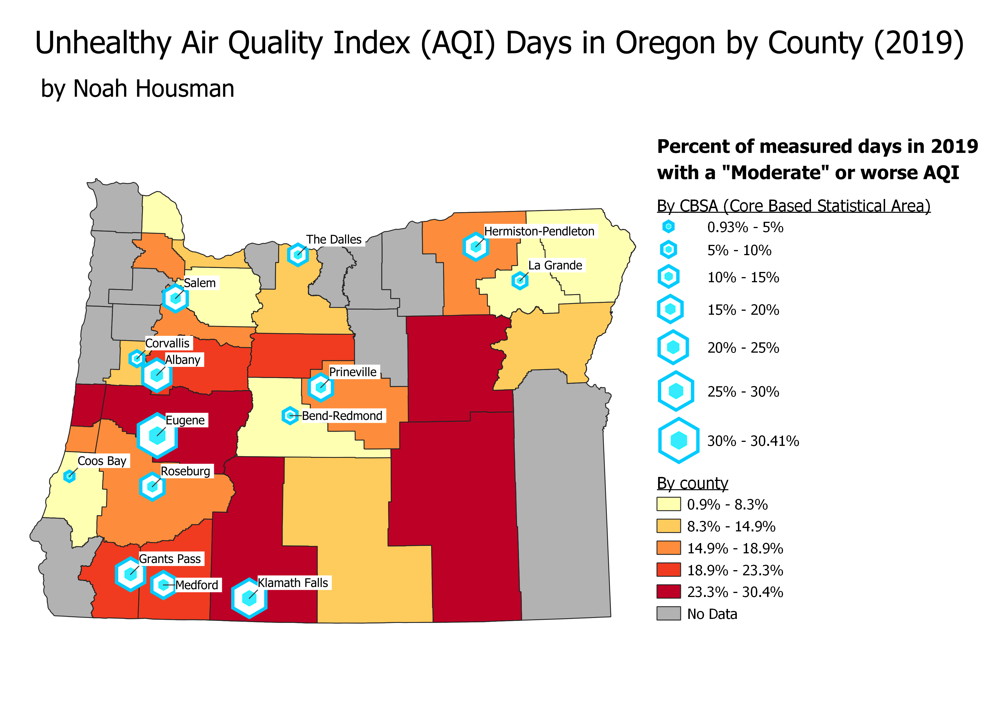

Homework 9: Oregon AQI Cloropleth and Proportional Symbol Map
Noah Housman
For this assignment, I found Air Quality Index data from the EPA and used it to make a cloropleth and proportional symbol map for the state of Oregon. From the data, I calculated a new variable (percent of measured days when the AQI was "Moderate" or worse), which is the variable you see displayed below. I did this for individual counties, as well as Core Based Statistical Areas (the equivalent of cities).

Data used for this project
Original CSBA (geometry and AQI) and county-level datasets from EPA
Cleaned CBSA data (geometry)
Cleaned CBSA data (AQI)
Cleaned county-level data
Oregon county shapefile (zipped)
Oregon county shapefile (original website)